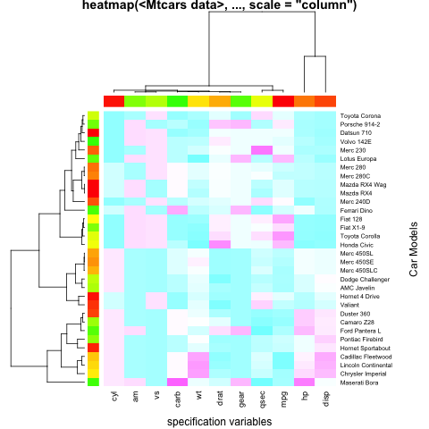

This explores how we can use the IdentifyDevice to find out which primitive elements that are drawn by R correspond to the elements in a plot. We will use the heatmap() function as our example as we have not yet explored how that is constructed. The goal is to be able to post-process the SVG output from R generated by a call to heatmap() and to add tooltips or some other interactive capabilities.
We'll use the first example in the heatmap() help page:
x = as.matrix(mtcars)
rc = rainbow(nrow(x), start=0, end=.3)
cc = rainbow(ncol(x), start=0, end=.3)
hv = heatmap(x, col = cm.colors(256), scale="column",
RowSideColors = rc, ColSideColors = cc, margins=c(5,10),
xlab = "specification variables", ylab= "Car Models",
main = "heatmap(Mtcars data, ..., scale = \"column\")")
 Note that there is a lot in this plot. We can see the main data area is made up of polygons. We have to other sequences of polygons on the left and top sides. And then we have two dendograms adjacent to these. Finally we have observations and variable labels on the right and bottom sides and finally we have x and y labels and a title.
Next we use our IdentifyDevice.
library(RGraphicsDevice)
source("device.R")
dev = metaDev(keepCalls = TRUE)
hv = heatmap(x, col = cm.colors(256), scale="column",
RowSideColors = rc, ColSideColors = cc, margins=c(5,10),
xlab = "specification variables", ylab= "Car Models",
main = "heatmap(Mtcars data, ..., scale = \"column\")")
dev.off()
We can now access the system calls:
info = dev$info()
We can look at the primitive operations via the names() on the info list:
table(names(info))line rect text 164 395 46
We see that there are 395 calls to the "rect" (rectangle) primitive. We have 32 observations in our data set and 11 variables. This makes 352 rectangles for the main region. We also have a rectangle for each variable and each observation in the sequence of rectangles on the sides of the plot. This makes a total of 395 and so we have accounted for all of the rectangles.
The next thing we want to do is determine the order in which the rectangles were drawn. We need to find the 352 data rectangles, and then those in the horizontal strip, and finally those in the vertical strip. Let's get the rect elements:
rects = info[names(info) == "rect"]
Before we continue, let's also read the SVG document containing the generated plot:
library(XML)
doc = xmlParse("heat.svg")
We can then try to associate the primitive operations and the graphical elements in the SVG document.
Within the SVG document, we are looking for
<path> and <g>
elements. We don't necessarily want all of them
as the cairo engine defines some
<path> and <g> elements
for use later on in the document. It does this for text, for instance.
gels = getNodeSet(doc, "//x:path|//x:g", "x")
Another way to think about this is that we want the top-level
<g> node and this will skip the
<defs> element.
So we can use
g = xmlRoot(doc)[["g"]]
Now we can find the <path> and <g>
elements within this sub-tree
gels = getNodeSet(g, ".//x:path|.//x:g", "x")
We end up with 612 nodes. This is 7 more than in info. Can we identify these 7 and so establish the connection between the primitives and the SVG elements?
Some of these <g> elements are just acting as a container
or group (hence the name <g>).
What we want is the collection of all <path> nodes
and also all <g> nodes which do not have
<path> children. We can get these with
gels = getNodeSet(g, ".//x:path | .//x:g[not(child::x:path)]", "x")
Here we end up with 607 nodes. So we still have 2 too many.
We need to eliminate the <g> nodes that also have
<g> nodes as children:
gels = getNodeSet(g, ".//x:path | .//x:g[not(child::x:g) and not(child::x:path)]", "x")
And now we have a match for the number of nodes and graphical primitive operations in info. We do know is that they are in the same order. However, we have to figure out how these relate to the visual elements in our display.
It turns out that heatmap() first
draws the vertical strip of polygons on the left side of the plot,
i.e. corresponding to the observations. So there are 32 of these.
The function then draws
the strip for the variables at the top of the plot.
There are 11 of these.
How do we know this? We can explore the SVG file manually
and exclude pieces and view the resulting document to see what is missing.
However, another approach is to return to our top-most
<g> node and look at its children:
xmlSApply(g, xmlSize)rect g g g g g g g 0 32 11 352 45 124 40 1
We see the rectangle (which we didn't draw, but libcairo did)
and then we see the next 395 elements are accounted for in the
first three <g> nodes.
So this tells us also that the rectangles for each combination
of variable and observation are in the 352 elements in the third <g>
node.
What is the order in which they are drawn?
Again, we can experiment manually. We can change the color on the first two <path> elements in
this third <g> node and make them, say, red.
When we reload the SVG document, we see that these are in the bottom left corner
and are vertically aligned, so being drawn for each observation for a given variable.
If we change the 33rd <path> element in this group, we will see
the next column.
An alternative approach to manually modifying the SVG document is to look at the coordinates of the path. We can compute each node's SVGPath with
library(SVGAnnotation) p = lapply(gels[44:76], as, "SVGPath")
Then we can look at the first two and the last two to see where they are located.
We now have enough information to put tooltips on the rectangles in the heatmap. For example, let's create the text for the tips as
tmp = expand.grid(a = colnames(mtcars), b = rownames(mtcars), stringsAsFactors = FALSE)
tips = sprintf("%s, %s %f", tmp$a, tmp$b, c(t(x)))
Now we can add them with
addToolTips(gels[44:395], tips)
Now let's save the SVG document to a new file:
saveXML(doc, "heatTips.svg")
The rectangles in the two strips on the sides of the plot
can be handled very similarly as
we know their nodes - gels[1:32]
and gels[33:43].
Let's see if we can find the SVG element corresponding to the title. If we assume that the heatmap() function placed the title there with a call to the title() function, we can search for that in the list of primitive calls, i.e. info:
which(sapply(info, function(x) any("title" == x)))
This gives us one element - number 605, i.e. the last.
Let's find the labels on the two axes. We can see if the mtext() function was used to create these.
which(sapply(info, function(x) "mtext" %in% x))text text 407 440
So we now know which nodes correspond to these strings. Which is which? Again, we can look at the path or alternatively we can look at the calls
dev$calls()[[407]]
We see the variable xlab. We can even find the value of the string from the first call
k = dev$calls()[[407]] k[[1]]$xlab
Of course, there are alternative ways to get. It is probably best to store the strings within the text graphics primitive in our IdentifyDevice.
What if we wanted to put tooltips or hyperlinks on the strings within the labels, i.e. the row names and column names. Let's examine all the text primitives but omit the ones we already know correspond to the title and the axes labels:
txt = info[-c(407, 440, 605)] txt = txt[names(txt) == "text"]
This gives us 43 nodes corresponding to the 11 + 32 names. Now we can look at how they were called:
txt
We see that these are all generated from calls to axis()
Since we want the SVG nodes corresponding to these, we can do the calculations slightly differently.
i = 1:length(gels) i = i[ !(i %in% c(407, 440, 605)) & names(info) == "text"]
Then we get the nodes with
gels[i]
Let's try to consolidate what we have learned into a function
getSVGHeatmap =
function(doc)
{
if(is.character(doc))
doc = xmlParse(doc)
g = xmlRoot(doc)[["g"]]
nr = xmlSize(g[[3]])
nc = xmlSize(g[[2]])
strings = g[[5]]
structure(list(dataRectangles = xmlChildren(g[[4]]),
verticalStrip = xmlChildren(g[[2]]),
horizontalStrip = xmlChildren(g[[3]]),
xText = strings[nc],
yText = strings[seq(nc + 2, length = xmlSize(g[[3]]))],
title = if(xmlSize(g) > 7) g[[xmlSize(g)]][[1]] else NULL,
axesLabels = list(x = strings[[nc + 1]], y = strings[[ length(strings) ]] ),
doc = doc),
class = "SVGHeatmap")
}
This is not robust.
If any of the axes labels are suppressed, then there is an issue.
Similarly, if the dendograms are suppressed.
We can call this as
h = getSVGHeatmap("heat.svg")
and then we can use addToolTips(), etc. to annotate the nodes. Then we can saveXML() the document back to a file and view it.
Note that the xlink:title issue is present for the tooltips. (See the http://www.omegahat.org/SVGAnnotation/FAQ.html)